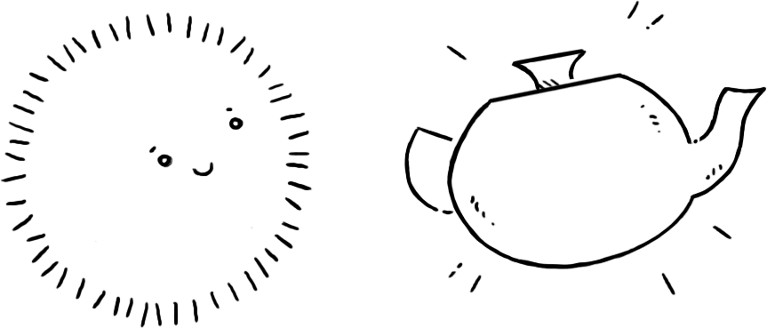
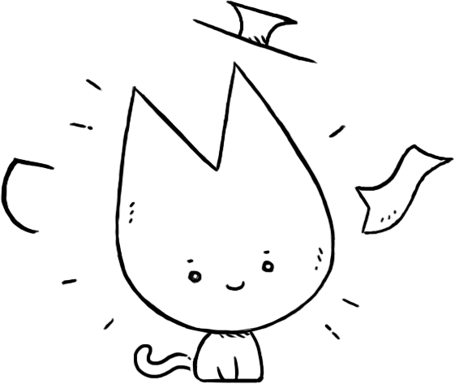
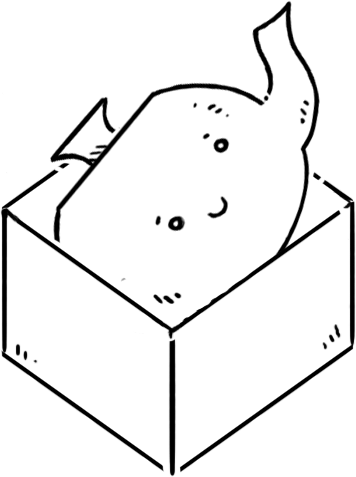
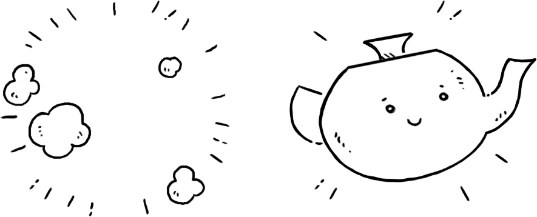
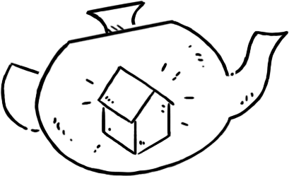
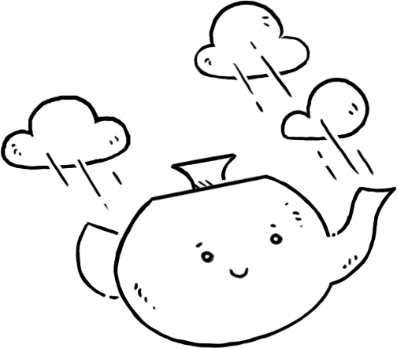
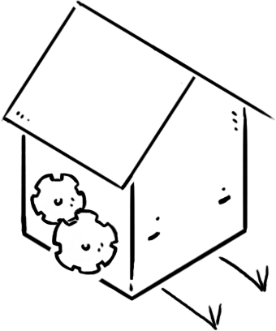
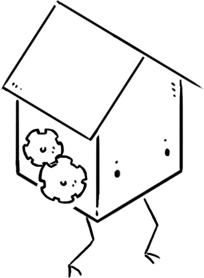

Paradise was originally written in Ruby, it was available as a multi-user server between 2011 and 2016. I spent some of my favourite days online interacting with players and the worlds that they built. Thanks to everyone who made this place so unique and for the good times.
The vessel capabilities of Paradise.
Each became vessel in Paradise is capable of doing a series of actions upon the world, here is the complete list:
Create
Creating creates a new vessel in the parent vessel:
You are a ghost in a library. | create a teapot You are a ghost in a library. You see a teapot.
Become
Becoming makes the animating spirit leave a vessel, and become another. Actions will, from then on, be carried as the became vessel.
You are a ghost in a library. You see a teapot. | become the teapot You are a teapot in a library. You see a ghost.

Becoming may also be used to rename a vessel. Some implementations use transform into.
You are a teapot in a library. | become a cat You are a cat in a library.
Enter
Entering a vessel changes the parent vessel to the target visible vessel. To enter a visible vessel:
You are a ghost in a library. You see a box. | enter the box You are a ghost in a box.
Entering may also be used to warp to a distant vessel with a specific name. Some implementations use warp into.
You are a teapot in a library. | enter a void You are a teapot in a void.
Leave
Leave moves your vessel back to the parent vessel. You may not leave if your vessel is within itself.
You are a ghost in a box. | leave You are a ghost in a library. You see a box.

Take
Take moves a visible vessel into your vessel, you make not take a vessel if your vessel is within itself.
You are a teapot in a library. You see a house. | take the house You are a teapot in a library. You carry a house.
Drop
Drop moves a vessel out of your vessel and into the parent vessel, you make not drop a vessel if your vessel is within itself.
You are a teapot in a library. You carry a house. | drop the house You are a teapot in a library. You see a house.

Note
Assign a description to the parent vessel.
You are a cat in a teapot. | note The inside of the teapot is stormy. You are a cat in a teapot. The inside of the teapot is stormy.
Program
Assign an automation to the parent vessel.
You are a cat in a coffee machine. | program create a coffee
Use
Use the automation of a visible vessel.
You are a cat in a library. You see a coffee machine. | use the coffee machine You are a cat in a library. You see a coffee machine and a coffee.
I have always imagined that Paradise will be a kind of library.Jorge Luis Borges
- source, Modal.
- live, web version(source)
- Virtual-world-inspired Programming Language Design
incoming: defunct